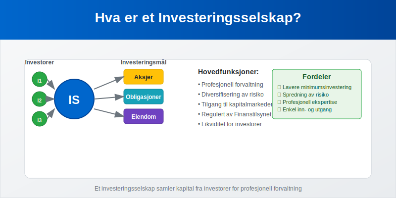
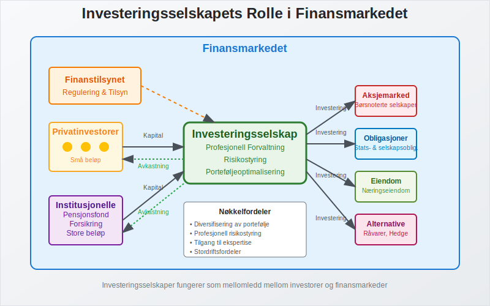
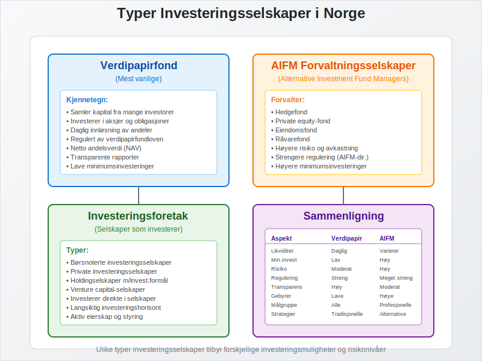
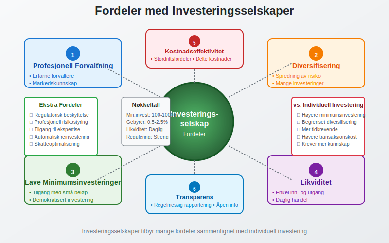
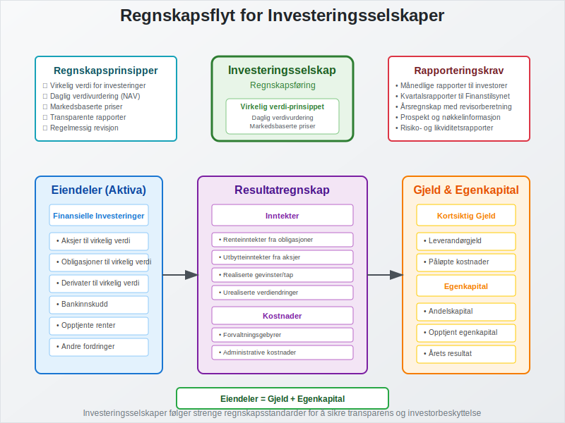
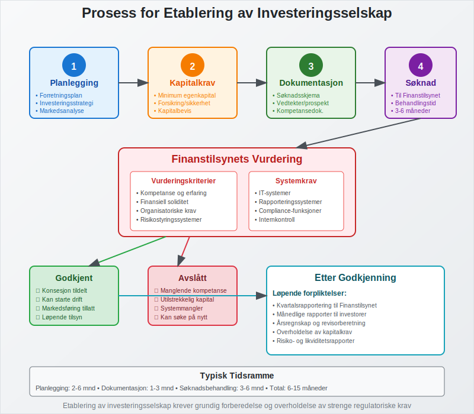

Et investeringsselskap er et finansielt selskap som samler kapital fra mange investorer for å investere i verdipapirer, eiendom eller andre finansielle instrumenter. Disse selskapene tilbyr profesjonell forvaltning og spredning av risiko for investorer som ønsker eksponering mot ulike markeder og aktivaklasser.

Hva Kjennetegner et Investeringsselskap?
Et investeringsselskap skiller seg fra vanlige aksjeselskaper ved at hovedformålet er å investere i andre selskaper eller finansielle instrumenter på vegne av sine investorer.
Profesjonell Forvaltning
Investeringsselskaper tilbyr profesjonell porteføljeforvaltning hvor erfarne forvaltere tar investeringsbeslutninger basert på grundig analyse og markedskunnskap.
Diversifisering
Ved å samle kapital fra mange investorer kan investeringsselskaper oppnå bedre diversifisering enn det enkeltinvestorer kan klare på egen hånd.
Regulering
Investeringsselskaper er underlagt streng regulering fra Finanstilsynet for å beskytte investorenes interesser.

Typer Investeringsselskaper
Det finnes flere typer investeringsselskaper i Norge, hver med sine særegne karakteristikker:
Verdipapirfond
Verdipapirfond er den vanligste formen for investeringsselskap i Norge. Disse fondene:
- Samler kapital fra mange investorer
- Investerer i aksjer, obligasjoner eller andre verdipapirer
- Utsteder andeler som representerer eierandel i fondet
- Har daglig innløsning av andeler til netto andelsverdi
Forvaltningsselskaper (AIFM)
Alternative Investment Fund Managers (AIFM) forvalter alternative investeringsfond som:
- Hedgefond
- Private equity-fond
- Eiendomsfond
- Råvarefond
Investeringsforetak
Investeringsforetak er selskaper som har som hovedformål å investere i andre selskaper. Disse kan være:
- Børsnoterte investeringsselskaper
- Private investeringsselskaper
- Holdingselskaper med investeringsformål

Regulering av Investeringsselskaper
Investeringsselskaper i Norge er underlagt omfattende regulering:
Verdipapirfondloven
Regulerer etablering og drift av verdipapirfond og forvaltningsselskaper.
AIFM-direktivet
Implementert i norsk rett for å regulere alternative investeringsfond.
Finanstilsynets Rolle
Finanstilsynet fører tilsyn med:
- Konsesjon og godkjenning av investeringsselskaper
- Løpende overholdelse av regelverket
- Beskyttelse av investorenes interesser
- Rapportering og transparens
Fordeler med Investeringsselskaper
For Investorer
| Fordel | Beskrivelse |
|---|---|
| Profesjonell forvaltning | Erfarne forvaltere med markedskunnskap |
| Diversifisering | Spredning av risiko på mange investeringer |
| Likviditet | Enkel inn- og utgang fra investeringer |
| Lave minimumsinvesteringer | Tilgang til markeder med små beløp |
| Transparens | Regelmessig rapportering og verdivurdering |
Kostnadseffektivitet
Investeringsselskaper kan oppnå stordriftsfordeler ved:
- Lavere transaksjonskostnader per investor
- Bedre forhandlingsposisjon overfor meglere
- Deling av forsknings- og analysekostnader
Tilgang til Ekspertise
Investorer får tilgang til profesjonell investeringsekspertise som de ellers ikke ville hatt råd til individuelt.

Ulemper og Risikoer
Forvaltningsgebyrer
Investeringsselskaper krever gebyrer for sine tjenester:
- Årlige forvaltningsgebyrer (typisk 0,5-2,5%)
- Resultatgebyrer (performance fees)
- Inn- og utgående gebyrer
Manglende Kontroll
Investorer har begrenset kontroll over:
- Investeringsbeslutninger
- Timing av kjøp og salg
- Spesifikke investeringsobjekter
Markedsrisiko
Som alle investeringer er investeringsselskaper utsatt for markedsrisiko og kan tape verdi.
Regnskapsmessig Behandling
For Investeringsselskapet
Investeringsselskaper må følge spesielle regnskapsregler:
- Virkelig verdi-prinsippet for verdivurdering av investeringer
- Regelmessig verdivurdering av porteføljen
- Detaljert rapportering til investorer og myndigheter
- Særskilte krav til regnskap og revisjon
For Investorer
Investorer må regnskapsføre sine investeringer i investeringsselskaper:
- Som finansielle eiendeler
- Til virkelig verdi eller anskaffelseskost
- Utbytte og gevinster påvirker inntekter

Skattemessige Forhold
Beskatning av Investeringsselskaper
Investeringsselskaper har spesielle skatteregler:
- Verdipapirfond er normalt fritatt for skatt på fondsnivå
- Beskatning skjer hos investorene ved utdeling eller realisasjon
- Fritaksmetoden kan være relevant for selskaper som investerer
For Investorer
Investorer beskattes for:
- Utdelinger fra investeringsselskaper
- Gevinst ved salg av andeler
- Skattereglene varierer avhengig av investortype (person vs. selskap)
Investeringsstrategier
Investeringsselskaper benytter ulike strategier:
Aktiv Forvaltning
- Aktive forvaltere forsøker å slå markedet gjennom:
- Aksjeseleksjon
- Markedstiming
- Sektorrotasjon
- Fundamental analyse
Passiv Forvaltning
- Indeksfond følger en markedsindeks
- Lavere kostnader enn aktiv forvaltning
- Bred markedseksponering
Spesialiserte Strategier
- Sektorspesifikke fond fokuserer på bestemte bransjer
- Geografiske fond investerer i spesifikke regioner
- Tematiske fond følger investeringstemaer som bærekraft eller teknologi
Etablering av Investeringsselskap
For å etablere et investeringsselskap i Norge må man:
Konsesjon fra Finanstilsynet
- Søknad om konsesjon som forvaltningsselskap
- Dokumentasjon av kompetanse og kapital
- Godkjenning av nøkkelpersonell
Kapitalkrav
- Minimum egenkapital avhengig av type virksomhet
- Forsikring eller andre sikkerhetsstillelser
Organisatoriske Krav
- Etablering av risikostyring
- Compliance-funksjoner
- Rapporteringssystemer

Internasjonale Forhold
UCITS-direktivet
UCITS (Undertakings for Collective Investment in Transferable Securities) regulerer:
- Grenseoverskridende markedsføring av fond
- Harmoniserte regler i EU/EØS
- Investorbeskyttelse
Passporting
Norske investeringsselskaper kan:
- Markedsføre fond i andre EU/EØS-land
- Etablere filialer i utlandet
- Tilby tjenester på tvers av landegrenser
Fremtidige Utviklingstrekk
Digitalisering
- Fintech-løsninger for fondsdistribusjon
- Robo-advisors for automatisert porteføljeforvaltning
- Blockchain-teknologi for verdipapiroppgjør
Bærekraftige Investeringer
- ESG-kriterier (Environmental, Social, Governance) blir viktigere
- Økt fokus på klimarisiko og bærekraft
- Regulatoriske krav til bærekraftsrapportering
Kostnadspress
- Økt konkurranse fører til lavere gebyrer
- Vekst i passive investeringsstrategier
- Konsolidering i bransjen
Sammenligning med Andre Investeringsformer
Investeringsselskap vs. Direkte Investering
| Aspekt | Investeringsselskap | Direkte Investering |
|---|---|---|
| Diversifisering | Høy | Lav (med mindre stor kapital) |
| Forvaltningskostnader | Ja | Nei |
| Kontroll | Lav | Høy |
| Minimumsinvestering | Lav | Varierer |
| Likviditet | Høy | Varierer |
Investeringsselskap vs. Crowdfunding
- Investeringsselskap: Profesjonell forvaltning, regulert
- Crowdfunding: Direkte investering, mindre regulering
Praktiske Råd for Investorer
Før Investering
- Vurder investeringsmål: Definér tidshorisont og risikotoleranse
- Sammenlign alternativer: Se på gebyrer, historisk avkastning og risiko
- Les prospekt: Forstå investeringsstrategien og risikoene
- Vurder skattekonsekvenser: Forstå beskatning av utdelinger og gevinster
Under Investeringsperioden
- Følg med på resultater: Regelmessig evaluering av investeringen
- Rebalansering: Vurder om porteføljen fortsatt passer dine mål
- Kostnadsbevissthet: Hold øye med gebyrer og deres påvirkning på avkastning
Relaterte Begreper
For å forstå investeringsselskaper fullt ut, bør du også sette deg inn i:
- Aksjeselskap - Grunnleggende selskapsform
- Avkastning - Måling av investeringsresultater
- Crowdfunding - Alternativ investeringsform
- Egenkapital - Kapitalbegrep
- Eiendel - Regnskapsmessig klassifisering
- Finansiering - Kapitalinnhenting
- Fritaksmetoden - Skattemessig behandling
- Holdingselskap - Relatert selskapsform
- Inntekter - Regnskapsføring av investeringsresultater
- Regnskap - Regnskapsføring for investeringsselskaper
Et investeringsselskap er en sofistikert finansiell struktur som krever grundig forståelse av både investeringsprinsipper og regulatoriske krav for å kunne operere effektivt i det norske finansmarkedet.